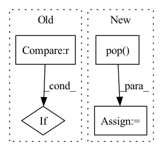

Pattern ID :2072
Before Change
)
def forward(self, observation):
if type(observation) is dict :
observation = torch.cat([value for _, value in observation.items()], dim=-1)
// detach prevents gradient flowing into encoder.
obs_v = obs_pi = observationAfter Change
self.features_embedding = nn.Linear(feature_size, embedding_size)
def forward(self, observation):
img = observation.pop( "img")
conv_features = self.cnn(img)
obs_features = torch.cat([value for _, value in observation.items()], dim=-1)
features_emb = self.features_embedding(obs_features)
result = torch.cat([conv_features, features_emb], dim=-1)In pattern: SUPERPATTERN
Frequency: 3
Non-data size: 4
Instances Fragment ID: 13898177
Project Name: cherrypiesexy/imitation_learning
Commit Name: d3dbcfd6f84f83aa4be338202b6b4c22d8cdd13a
Time: 2021-01-29
Author: interga@post-hardcore.ru
File Name: algorithms/nn/conv_encoders.py
M Class Name: TwoLayerActorCritic
N Class Name: FeaturesConvEncoder
M Method Name: forward(2)
N Method Name: forward(2)
M Parent Class: nn.Module
N Parent Class: nn.Module
M File Name: algorithms/nn/conv_encoders.py
N File Name: algorithms/nn/conv_encoders.py
M Start Line: 103
M End Line: 115
N Start Line: 86
N End Line: 91
Before Change
rst = th.matmul(feat_src, self.weight1) + th.matmul(rst, self.weight2)
if self.activation is not None :
rst = self.activation(rst)
return rst
After Change
stype, etype, dtype = e
sub_graph = hg[stype, etype, dtype]
sub_graph.update_all(aggregate_fn, fn.sum(msg="m", out="out"))
temp = hg.ndata["out"].pop( dtype)
if isinstance(temp, dict):
temp = temp[dtype]
if outputs.get(dtype) is None:
outputs[dtype] = temp
else:
outputs[dtype].add_(temp)
Fragment ID: 13898190
Project Name: bupt-gamma/openhgnn
Commit Name: 8673a0f313e6be0f6f7ccaf65aaf993769e4adf9
Time: 2021-05-23
Author: theheavenszhao@outlook.com
File Name: openhgnn/models/RSHN.py
M Class Name: GraphConv
N Class Name: GraphConv
M Method Name: forward(4)
N Method Name: forward(4)
M Parent Class: nn.Module
N Parent Class: nn.Module
M File Name: openhgnn/models/RSHN.py
N File Name: openhgnn/models/RSHN.py
M Start Line: 170
M End Line: 179
N Start Line: 155
N End Line: 186
Before Change
wsz = min(wsz, t)
c_wsz = min(c_wsz, kv_t)
if wsz < self.window_size :
c_wsz = (self.window_size * self.context_window_size) // wsz
indices, loss_1 = self.kmeans(q, wsz)
kv_indices, loss_2 = self.kmeans(k, c_wsz)
aux_loss = loss_1 + loss_2After Change
def forward(self, q, k, v, query_mask = None, key_mask = None, **kwargs):
b, h, t, d, kv_t, wsz, c_wsz, nc, device, dtype = *q.shape, k.shape[2], self.window_size, self.context_window_size, self.num_clusters, q.device, q.dtype
is_reverse = kwargs.pop( "_reverse", False)
out = torch.zeros_like(q, dtype=dtype)
update_kmeans = self.training and not is_reverse
if self.shared_qk:
wsz = min(wsz, t) Fragment ID: 13898185
Project Name: lucidrains/routing-transformer
Commit Name: 2042adb06111339b86814500f0c389759b8f6cdf
Time: 2020-05-27
Author: lucidrains@gmail.com
File Name: routing_transformer/routing_transformer.py
M Class Name: KmeansAttention
N Class Name: KmeansAttention
M Method Name: forward(6)
N Method Name: forward(6)
M Parent Class: nn.Module
N Parent Class: nn.Module
M File Name: routing_transformer/routing_transformer.py
N File Name: routing_transformer/routing_transformer.py
M Start Line: 433
M End Line: 449
N Start Line: 405
N End Line: 431